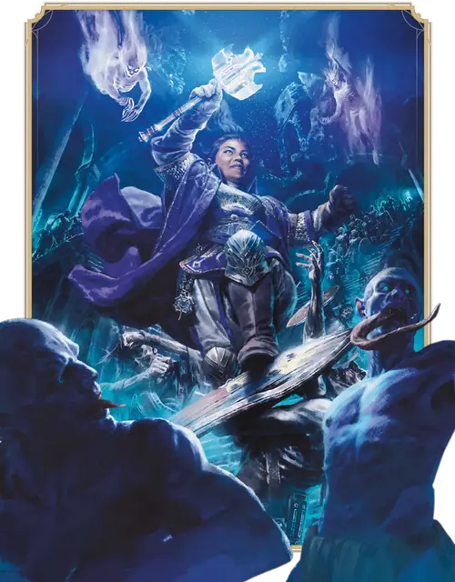

Жрец
Cleric

Основная характеристика Мудрость
Кость хитов К8 за уровень Жреца
Хиты за уровень 1к8 (или 5) + ваш модификатор Телосложения (суммарно минимум 1)
Владение спасбросками Мудрость и Харизма
Владение навыками Выберите два: История, Медицина, Проницательность, Религия или Убеждение
Владение оружием Простое оружие
Тренированность с доспехами Лёгкие и Средние доспехи и Щиты
Начальное снаряжение Выберите А или Б:
(А) Кольчужная рубаха, Щит, Булава, Священный символ, Набор священника и 7 ЗМ;
или (Б) 110 ЗМ
| Уровень | Бонус владения | Классовые умения | Проведение божественности | Заговоры | Подготовленные заклинания | Ячейки заклинаний на уровень заклинаний: 1 | Ячейки заклинаний на уровень заклинаний: 2 | Ячейки заклинаний на уровень заклинаний: 3 | Ячейки заклинаний на уровень заклинаний: 4 | Ячейки заклинаний на уровень заклинаний: 5 | Ячейки заклинаний на уровень заклинаний: 6 | Ячейки заклинаний на уровень заклинаний: 7 | Ячейки заклинаний на уровень заклинаний: 8 | Ячейки заклинаний на уровень заклинаний: 9 |
|---|---|---|---|---|---|---|---|---|---|---|---|---|---|---|
| 1 | +2 | Сотворение заклинаний, Божественный орден | - | 3 | 4 | 2 | - | - | - | - | - | - | - | - |
| 2 | +2 | Проведение божественности | 2 | 3 | 5 | 3 | - | - | - | - | - | - | - | - |
| 3 | +2 | Подкласс Жреца | 2 | 3 | 6 | 4 | 2 | - | - | - | - | - | - | - |
| 4 | +2 | Увеличение характеристик | 2 | 4 | 7 | 4 | 3 | - | - | - | - | - | - | - |
| 5 | +3 | Испепеление нежити | 2 | 4 | 9 | 4 | 3 | 2 | - | - | - | - | - | - |
| 6 | +3 | Умение подкласса | 3 | 4 | 10 | 4 | 3 | 3 | - | - | - | - | - | - |
| 7 | +3 | Благословленные удары | 3 | 4 | 11 | 4 | 3 | 3 | 1 | - | - | - | - | - |
| 8 | +3 | Увеличение характеристик | 3 | 4 | 12 | 4 | 3 | 3 | 2 | - | - | - | - | - |
| 9 | +4 | — | 3 | 4 | 14 | 4 | 3 | 3 | 3 | 1 | - | - | - | - |
| 10 | +4 | Божественное вмешательство | 3 | 5 | 15 | 4 | 3 | 3 | 3 | 2 | - | - | - | - |
| 11 | +4 | — | 3 | 5 | 16 | 4 | 3 | 3 | 3 | 2 | 1 | - | - | - |
| 12 | +4 | Увеличение характеристик | 3 | 5 | 16 | 4 | 3 | 3 | 3 | 2 | 1 | - | - | - |
| 13 | +5 | — | 3 | 5 | 17 | 4 | 3 | 3 | 3 | 2 | 1 | 1 | - | - |
| 14 | +5 | Улучшенные Благословленные удары | 3 | 5 | 17 | 4 | 3 | 3 | 3 | 2 | 1 | 1 | - | - |
| 15 | +5 | — | 3 | 5 | 18 | 4 | 3 | 3 | 3 | 2 | 1 | 1 | 1 | - |
| 16 | +5 | Увеличение характеристик | 3 | 5 | 18 | 4 | 3 | 3 | 3 | 2 | 1 | 1 | 1 | - |
| 17 | +6 | Умение подкласса | 3 | 5 | 19 | 4 | 3 | 3 | 3 | 2 | 1 | 1 | 1 | 1 |
| 18 | +6 | — | 4 | 5 | 20 | 4 | 3 | 3 | 3 | 3 | 1 | 1 | 1 | 1 |
| 19 | +6 | Эпический дар | 4 | 5 | 21 | 4 | 3 | 3 | 3 | 3 | 2 | 1 | 1 | 1 |
| 20 | +6 | Великое божественное вмешательство | 4 | 5 | 22 | 4 | 3 | 3 | 3 | 3 | 2 | 2 | 1 | 1 |
как персонаж 1-го уровня
Получите все атрибуты из таблицы «Ключевые атрибуты Жреца».
Получите умения Жреца 1-го уровня; они перечислены в таблице «Умения Жреца».
как мультиклассовый персонаж
Получите следующие атрибуты из таблицы «Ключевые атрибуты Жреца»: Кость хитов и тренированность с Лёгкими и Средними доспехами и Щитами.
Получите умения Жреца 1-го уровня; они перечислены в таблице «Умения Жреца». Ознакомьтесь с правилами мультиклассирования, чтобы определить доступные вам ячейки заклинаний.
Уровень 1: Сотворение заклинаний
Вы научились сотворять заклинания через молитвы и медитации. Правила сотворения заклинаний смотрите в соответствующей статье. Следующая информация описывает, как вы используете эти правила с заклинаниями Жреца.
Заговоры. Вы знаете три заговора на ваш выбор из списка заклинаний Жреца. Рекомендуются Наставление, Священное пламя и Чудотворство. Каждый раз, когда вы получаете уровень Жреца, вы можете заменить один из заговоров, полученных от этого умения, другим заговором Жреца на ваш выбор.
Когда вы достигаете 4-го и 10-го уровней Жреца, вы изучаете ещё по одному заговору из списка заклинаний Жреца на ваш выбор, как показано в столбце «Заговоры» таблицы «Умения Жреца».
Ячейки заклинаний. В таблице «Умения Жреца» указано, сколько у вас есть ячеек заклинаний для сотворения заклинаний 1-го уровня и выше. Вы восстанавливаете все потраченные ячейки, когда завершаете Долгий отдых.
Подготовленные заклинания 1-го уровня и выше. Вы подготавливаете список заклинаний 1-го уровня и выше, которые вы можете сотворять с помощью этого умения. Для начала выберите четыре заклинания 1-го уровня из списка заклинаний Жреца. Рекомендуются Благословение, Лечение ран, Направляющий снаряд и Щит веры.
Количество заклинаний в вашем списке увеличивается по мере получения уровней Жреца, как указано в столбце «Подготовленные заклинания» таблицы «Умения Жреца». Когда это число увеличивается, выбирайте дополнительные заклинания Жреца до тех пор, пока их количество не сравняется с числом, указанным в таблице. Каждое выбираемое заклинание может быть только такого уровня, для которого у вас есть ячейка заклинаний. Например, если вы Жрец 3-го уровня, ваш список подготовленных заклинаний может включать шесть заклинаний 1-го или 2-го уровня в любой комбинации.
Если другое умение Жреца даёт вам заклинания, которые у вас всегда подготовлены, то эти заклинания не учитываются в общем списке подготавливаемых вами с помощью этого умения заклинаний; в остальных отношениях для вас они считаются заклинаниями Жреца.
Замена подготовленных заклинаний. Каждый раз, когда вы завершаете Долгий отдых, вы можете изменить свой список подготовленных заклинаний, заменив любое из них количество другими заклинаниями Жреца, для которых у вас есть ячейки заклинаний.
Заклинательная характеристика. Заклинательной характеристикой для ваших заклинаний Жреца является Мудрость.
Заклинательная фокусировка. Вы можете использовать Священный символ в качестве Заклинательной фокусировки для ваших заклинаний Жреца.
Уровень 1: Божественный орден
Вы посвятили себя одной из следующих священных ролей на ваш выбор.
Защитник. Вы натренированы для битвы; вы получаете владение Воинским оружием и тренированность с Тяжёлыми доспехами.
Чудотворец. Вы изучаете ещё один заговор из списка заклинаний Жреца. Кроме того, ваша мистическая связь с божественным даёт вам бонус к вашим проверкам Интеллекта (Тайная магия или Религия). Бонус равен вашему модификатору Мудрости (минимум +1).
Уровень 2: Проведение божественности
Вы можете направлять божественную энергию непосредственно с Внешних планов, сотворяя магические эффекты. Вы начинаете с двумя такими эффектами: Божественная искра и Изгнание нежити; эти эффекты описаны ниже. Каждый раз, когда вы используете Проведение божественности этого класса, выберите, какой эффект Проведения божественности этого класса вы создаёте. С получением уровней Жреца вы получаете дополнительные варианты эффектов.
Вы можете использовать Проведение божественности этого класса дважды. Вы восстанавливаете одно потраченное использование Проведения по завершению Короткого отдыха, и вы восстанавливаете все потраченные использования по завершению Долгого отдыха. Вы получаете дополнительные использования, когда достигаете определенных уровней Жреца, как показано в столбце «Проведение божественности» таблицы «Умения Жреца».
Если эффект Проведения божественности требует совершения спасброска, его Сл равняется Сл спасброска заклинаний от умения Сотворение заклинаний этого класса.
Божественная искра. Действием Магия вы направляете ваш Священный символ на другое существо, видимое вами в пределах 30 футов от вас, и сосредотачиваете на нём божественную энергию. Бросьте 1к8 и добавьте свой модификатор Мудрости. Вы либо восстанавливаете этому существу Хиты в количестве, равном этой сумме, либо заставляете существо совершить спасбросок Телосложения: при провале оно получает Некротический урон или урон Излучением (на ваш выбор), равный этой сумме, а при успехе получает только половину этого урона (округляя вниз).
Вы бросаете дополнительную кость к8 по достижению 7-го (2к8), 13-го (3к8) и 18-го (4к8) уровней Жреца.
Изгнание нежити. Действием Магия вы демонстрируете ваш Священный символ и выносите приговор Нежити. Каждая Нежить на ваш выбор в пределах 30 футов от вас должна совершить спасбросок Мудрости. Если существо проваливает спасбросок, оно получает состояния Испуганный и Недееспособный на 1 минуту. В течение этого времени в свои ходы существо старается переместиться как можно дальше от вас. Этот эффект заканчивается на существе раньше, если оно получает урон, если вы получаете состояние Недееспособный или если вы умираете.
Уровень 3: Подкласс Жреца
Вы получаете подкласс Жреца на ваш выбор. Подкласс — это специализация, которая даёт вам умения на определённых уровнях Жреца. Вы всегда получаете все умения подкласса, уровень которых не больше вашего уровня Жреца.
Уровень 4: Увеличение характеристик
Вы получаете черту Увеличение характеристик или другую черту на ваш выбор, требованиям которой вы соответствуете.
Уровень 5: Испепеление нежити
Каждый раз, когда вы используете Изгнание нежити, вы можете бросить кости к8 в количестве, равном вашему модификатору Мудрости (минимум 1к8), и сложить результаты вместе. Каждая Нежить, провалившая спасбросок против этого использования Изгнания нежити, получает урон Излучением, равный сумме бросков. Этот урон не отменяет эффект Изгнания.
Уровень 6: Умение подкласса
Вы получаете все умения подкласса Жреца 6-го уровня.
Уровень 7: Благословленные удары
В битве вас наполняет божественная сила. Вы получаете одну из следующих особенностей на ваш выбор (если вы получаете любую из этих особенностей от подкласса Жреца из более старой книги, используйте только тот вариант, который вы выбрали для этого умения).
Божественный удар. Один раз в каждый ваш ход, когда вы попадаете броском атаки с использованием оружия, можете нанести цели 1к8 дополнительного Некротического урона или урона Излучением (на ваш выбор).
Могущественные заклинания. Каждый раз, когда вы наносите урон заговором Жреца, вы добавляете к урону ваш модификатор Мудрости.
Уровень 8: Увеличение характеристик
Вы получаете черту Увеличение характеристик или другую черту на ваш выбор, требованиям которой вы соответствуете.
Уровень 10: Божественное вмешательство
Вы можете призвать свое божество или пантеон вступиться за вас. Действием Магия выберите любое заклинание Жреца 5-го уровня или ниже, которое не сотворяется Реакцией. Частью этого же действия вы сотворяете это заклинание без траты ячейки заклинаний и не требуя Материального компонента. Как только вы использовали это умение, вы не можете сделать это вновь, пока не завершите Долгий отдых.
Уровень 12: Увеличение характеристик
Вы получаете черту Увеличение характеристик или другую черту на ваш выбор, требованиям которой вы соответствуете.
Уровень 14: Улучшенные Благословленные удары
Выбранный вами вариант Благословленных ударов становится более мощным.
Божественный удар. Дополнительный урон вашего Божественного удара увеличивается до 2к8.
Могущественные заклинания. Когда вы сотворяете заговор Жреца и наносите им урон существу, вы можете увеличить вашу живучесть или живучесть другого существа в пределах 60 футов от вас, даруя Временные хиты в количестве, равном вашему модификатору Мудрости, умноженному на два.
Уровень 16: Увеличение характеристик
Вы получаете черту Увеличение характеристик или другую черту на ваш выбор, требованиям которой вы соответствуете.
Уровень 17: Умение подкласса
Вы получаете все умения подкласса Жреца 17-го уровня.
Уровень 19: Эпический дар
Вы получаете черту из категории Эпических даров или другую черту по вашему выбору, требованиям которой вы соответствуете. Рекомендуется Дар судьбы.
Уровень 20: Великое божественное вмешательство
Вы можете призывать ещё более мощное вмешательство божественных сил. Когда вы используете ваше умение Божественное вмешательство, можете выбрать заклинание Желание. В таком случае вы не сможете использовать Божественное вмешательство, пока не завершите 2к4 Долгих отдыхов.
Подклассы
Домен войны
Вдохновляйте на доблесть и карайте врагов
У войны много проявлений. Она может сделать из обычных людей — героев. Она может нести отчаянье и ужас, когда картины жестокости и трусости затмевают примеры совершенства и мужества. Жрецы, использующие магию Домена войны, лучше всего показывают себя в сражениях, вдохновляя других на годную схватку или совершая насилие как молитву.
Боги Домена войны присматривают за воинами и вознаграждают их за великие деяния. Среди них есть как защитники чести и рыцарства, так и боги разрушения и грабежа. Некоторые боги войны занимают более нейтральную позицию, поощряя войну во всех её проявлениях и поддерживая воинов при любых обстоятельствах.
Уровень 3: Боевой священник
Бонусным действием вы можете совершить одну атаку оружием или Безоружный удар. Вы можете использовать это Бонусное действие количество раз, равное вашему модификатору Мудрости (минимум один раз). Вы восстанавливаете все потраченные использования, когда завершаете Короткий или Долгий отдых.
Уровень 3: Заклинания домена войны
Ваша связь с этим божественным доменом гарантирует, что у вас всегда будут подготовлены определённые заклинания. С момента достижения вами уровня Жреца, указанного в следующей таблице, у вас всегда будут подготовлены соответствующие этому уровню заклинания.
| Уровень Жреца | Заклинания |
| 3 | Духовное оружие, Магическое оружие, Направляющий снаряд, Щит веры |
| 5 | Духовные стражи, Ореол крестоносца |
| 7 | Огненный щит, Свобода перемещения |
| 9 | Удар стального ветра, Удержание чудовища |
Уровень 3: Направленный удар
Когда вы или существо в пределах 30 футов от вас промахиваетесь броском атаки, можете потратить использование вашего Проведения божественности и дать этому броску бонус +10, что может изменить результат на попадание. Когда вы используете это умение, чтобы дать бонус броску атаки другого существа, вы должны делать это Реакцией.
Уровень 6: Благословение бога войны
Cотворяя Щит веры или Духовное оружие, вы можете потратить вместо ячейки заклинаний использование вашего Проведения божественности.
Сотворённые таким образом, эти заклинания не требуют Концентрации; взамен заклинание длится только 1 минуту и заканчивается раньше, если вы снова сотворите это заклинание, получите состояние Недееспособный или умрёте.
Уровень 17: Воплощение битвы
Вы получаете Сопротивление Дробящему, Колющему и Рубящему урону.
Домен жизни
Умягчите страдания этого мира
Домен жизни сосредотачивается на позитивной энергии, поддерживающей всё живое в мультивселенной. Жрецы этого домена являются мастерами лечения, используя эту жизненную силу для исцеления ран.
Жрец практически любой религиозной традиции может выбрать этот домен, ибо само существование зависит от связанной с этим доменом положительной энергии. Этот домен особенно сильно связан с божествами земледелия, богами лечения или выносливости, а также богами дома и общины. Практикующие лечение религиозные ордены также взыскуют магии этого домена.
Уровень 3: Заклинания домена жизни
Ваша связь с этим божественным доменом гарантирует, что у вас всегда будут подготовлены определённые заклинания. С момента достижения вами уровня Жреца, указанного в следующей таблице, у вас всегда будут подготовлены соответствующие этому уровню заклинания.
| Уровень Жреца | Заклинания |
| 3 | Благословение, Лечение ран, Малое восстановление, Подмога |
| 5 | Возрождение, Множественное лечащее слово |
| 7 | Аура жизни, Защита от смерти |
| 9 | Высшее восстановление, Множественное лечение ран |
Уровень 3: Поборник жизни
Когда заклинание, сотворённое вами с ячейкой заклинаний, восстанавливает существу Хиты, количество восстанавливаемых Хитов увеличивается в тот ход, в который вы сотворили это заклинание. Число дополнительных Хитов равно 2 + уровень использованной ячейки.
Уровень 3: Сохранение жизни
Действием Магия вы демонстрируете ваш Священный символ и тратите использование Проведения божественности, вызывая лечащую энергию, которая может восстановить Хиты в количестве, равном вашему уровню Жреца, умноженному на пять. Выберите Окровавленных существ в пределах 30 футов от вас (можно выбрать и себя) и разделите эти Хиты между ними. Это умение может восстановить существу не более половины его максимума Хитов.
Уровень 6: Благословенный целитель
Сотворяемые вами на других заклинания лечения действуют также и на вас. Сразу после того, как вы сотворили заклинание с ячейкой заклинаний, вы восстанавливаете Хиты в количестве, равном 2 + уровень ячейки, если это заклинание восстанавливает Хиты хотя бы одному существу помимо вас.
Уровень 17: Высшее исцеление
Когда вам нужно бросить одну или несколько костей, чтобы заклинанием или Проведением божественности восстановить Хиты существу, не бросайте эти кости; вместо этого используйте максимальное значение каждой из костей. Например, вместо того, чтобы восстановить заклинанием существу 2к6 Хитов, вы восстанавливаете 12.
Домен обмана
Устраивайте пакости и бросайте вызов властям
Домен обмана предлагает магию обмана, иллюзий и скрытности. Владеющие этой магией Жрецы расшатывают мир, накалывая гордецов, глумясь над тиранами, освобождая пленников и попирая пустые традиции. Прямой конфронтации они предпочитают уловки и розыгрыши.
Боги обмана — это озорники и подстрекатели, постоянный вызов принятым порядкам как среди богов, так и среди смертных. Они олицетворяют силы перемен и социальных потрясений, а также покровительствуют ворам, негодяям, игрокам, мятежникам и освободителям. Действующие втайне религиозные ордена, особенно те, что стремятся свергнуть деспотичные правительства или иерархии, также используют силу Домена обмана.
Уровень 3: Благословение обманщика
Действием Магия вы можете выбрать себя или согласное существо в пределах 30 футов от вас, позволяя совершать с Преимуществом проверки Ловкости (Скрытность). Это благословение действует, пока вы не завершите Долгий отдых или не воспользуетесь этим умением снова.
Уровень 3: Двуличность
Бонусным действием вы можете потратить использование своего Проведения божественности, чтобы создать идеальную визуальную иллюзию себя в видимом вами в пределах 30 футов от вас незанятом пространстве. Иллюзия неосязаема и не занимает пространство. Она существует 1 минуту, но исчезает раньше, если вы рассеете её (действий не требуется) или получите состояние Недееспособный. Иллюзия нестатична и повторяет ваши выражения лица и движения рук. Пока она существует, вы получаете следующие преимущества.
Сотворение заклинаний. Вы можете сотворять заклинания так, как если бы находились в пространстве иллюзии, но при этом всё равно должны использовать свои собственные чувства.
Отвлечение. Когда и вы, и ваша иллюзия находитесь в пределах 5 футов от существа, которое может видеть иллюзию, вы совершаете с Преимуществом броски атаки по этому существу — настолько иллюзия отвлекает цель.
Перемещение. Бонусным действием вы можете переместить иллюзию на расстояние до 30 футов в видимое вами в пределах 120 футов от вас незанятое пространство.
Уровень 3: Заклинания домена обмана
Ваша связь с этим божественным доменом гарантирует, что у вас всегда будут подготовлены определённые заклинания. С момента достижения вами уровня Жреца, указанного в следующей таблице, у вас всегда будут подготовлены соответствующие этому уровню заклинания.
| Уровень Жреца | Заклинания |
| 3 | Бесследное передвижение, Маскировка, Невидимость, Очарование личности |
| 5 | Гипнотический узор, Необнаружимость |
| 7 | Переносящая дверь, Смятение |
| 9 | Изменение памяти, Подчинение личности |
Уровень 6: Рокировка
Каждый раз, когда вы Бонусным действием создаёте или перемещаете иллюзию вашей Двуличности, вы можете телепортироваться, обмениваясь местами с иллюзией.
Уровень 17: Улучшенная двуличность
Иллюзия вашей Двуличности стала ещё сильнее в следующих отношениях:
Усиленное отвлечение. Вы и ваши союзники совершаете с Преимуществом броски атаки по существам в пределах 5 футов от иллюзии.
Иллюзия исцеления. Когда иллюзия исчезает, вы или существо в пределах 5 футов от иллюзии на ваш выбор восстанавливаете Хиты в количестве, равном вашему уровню Жреца.
Домен света
Несите Свет, дабы разогнать Тьму
Домен света сосредоточен на божественной силе, что несёт пылающий огонь и открывает истину. Жрецы, вооруженные этой силой — просветленные души, исполненные сиянием и проницательным взором своих божеств; их задача — изгнать ложь и выжечь тьму.
Домен света связан с богами истины, бдительности, красоты, проницательности и обновления. Некоторые из этих богов отождествляются с солнцем или возничими, что ведут солнце по небу. Другие — это разоблачающие обман стражи. Третьи же — божества красоты и артистизма; они учат, что искусство — это проводник в духовном развитии.
Уровень 3: Заклинания домена света
Ваша связь с этим божественным доменом гарантирует, что у вас всегда будут подготовлены определённые заклинания. С момента достижения вами уровня Жреца, указанного в следующей таблице, у вас всегда будут подготовлены соответствующие этому уровню заклинания.
| Уровень Жреца | Заклинания |
| 3 | Видение невидимого, Огненные ладони, Огонь фей, Палящий луч |
| 5 | Дневной свет, Огненный шар |
| 7 | Магический глаз, Огненная стена |
| 9 | Наблюдение, Небесный огонь |
Уровень 3: Ограждающая вспышка
Когда видимое вами в пределах 30 футов от вас существо совершает бросок атаки, вы можете Реакцией наложить Помеху на этот бросок, вызывая вспышку света до того, как атака попадёт или промахнётся.
Вы можете использовать это умение количество раз, равное вашему модификатору Мудрости (минимум один раз). Вы восстанавливаете все потраченные использования, когда завершаете Долгий отдых.
Уровень 3: Сияние рассвета
Действием Магия вы демонстрируете ваш Священный символ и тратите использование Проведения божественности, испуская вспышку света в исходящей от вас 30-футовой Эманации. Любая магическая Темнота — например, созданная заклинанием Тьма — в этой области рассеивается. Кроме того, выберите существ в этой области; каждое выбранное существо должно совершить спасбросок Телосложения, получая 2к10 + ваш уровень Жреца урона Излучением при провале или половину этого урона при успехе.
Уровень 6: Улучшенная ограждающая вспышка
Вы восстанавливаете все потраченные использования Ограждающей вспышки, когда завершаете Короткий или Долгий отдых.
Кроме того, всякий раз, когда вы используете Ограждающую вспышку, вы можете дать цели атаки, на которую применена вспышка, Временные хиты в количестве, равном 2к6 + ваш модификатор Мудрости.
Уровень 17: Корона света
Действием Магия вы начинаете излучать ауру солнечного света, существующую в течение 1 минуты или пока вы не рассеете её (действий не требуется). Вы излучаете Яркий свет в радиусе 60 футов и Тусклый свет ещё на 30 футов. Ваши враги в области этого Яркого света совершают с Помехой спасброски против вашего Сияния рассвета и всех заклинаний, наносящих урон Излучением или Огнём.
Вы можете использовать это умение количество раз, равное вашему модификатору Мудрости (минимум один раз), восстанавливая потраченное, когда завершаете Долгий отдых.
Домен знаний
Раскрывайте секреты и станьте мастером разума
Домен знаний превыше всего ценит учение и понимание. Служители этого домена изучают эзотерические знания, коллекционируют древние тома, проникают в потаённые места и узнают, как действует разум. Знания для них куда ценнее материальных благ, а познание — как акт поклонения. Библиотеки, университеты и иные образовательные учреждения также связаны с силами этого домена.
Боги знаний могут быть как мастерами тайной магии, так и покровителями ремесла и изобретения. В Забытых королевствах Жрецы этого домена поклоняются,помимо прочих, божествам познания и изобретательности, таким как Огма или Гонд.
Уровень 3: Благословенные знания
Вы получаете владение одним типом Ремесленных инструментов на ваш выбор, а также двумя навыками по вашему выбору из следующего списка: История, Природа, Религия, Тайная магия. Вы обладаете Экспертностью в этих выбранных навыках.
Уровень 3: Заклинания домена знаний
Ваша связь с этим божественным доменом гарантирует, что у вас всегда будут подготовлены определённые заклинания. С момента достижения вами уровня Жреца, указанного в следующей таблице, у вас всегда будут подготовлены соответствующие этому уровню заклинания.
| Уровень Жреца | Заклинания |
| 3 | Обнаружение магии, Обнаружение мыслей, Опознание, Понимание языков, Приказ, Пронзание разума |
| 5 | Необнаружимость, Рассеивание магии, Языки |
| 7 | Изгнание, Магический глаз*, Смятение |
| 9 | Знание легенд, Наблюдение, Синаптический разряд |
* - заклинание школы Прорицания
Уровень 3: Магия разума
Вы можете действием Магия потратить использование Проведения божественности и использовать ваше магическое знание. Выберите одно заклинание Прорицания из тех, что у вас подготовлены среди перечисленных в таблице Заклинания домена знаний. Частью этого действия вы сотворяете это заклинание без траты ячейки заклинаний и предоставления Материальных компонентов.
Уровень 6: Разум освобождённый
Вы получаете телепатию дальностью 60 футов. Используя эту телепатию, вы можете одновременно связывать ваш разум с количеством существ, не превышающим ваш модификатор Мудрости (не менее одного). Кроме того, вы получаете владение спасбросками Интеллекта. Если вы уже владеете ими, вместо этого вы получаете владение спасбросками другой характеристики, из тех, спасбросками которой вы ещё не владеете.
Уровень 17: Божественное предзнание
Бонусным действием вы простираете ваш разум в будущее. В течение следующего часа вы совершаете с Преимуществом все Тесты к20. Как только вы используете это умение, вы не можете сделать это снова, пока не завершите Долгий отдых. Вы можете также восстановить использование этого умения, потратив ячейку заклинаний 6-го уровня или выше (действий не требуется).
Домен упокоения
Воплощайте божественные силы Смерти
Домен упокоения стоит на границе между жизнью и смертью. Черпающие силы этого домена считают, что смерть - естественная и неизбежная часть мультивселенной. Жрецы этого домена стремятся уничтожать нежить и упокаивать души.
Магия этого домена позволяет Жрецу также и отсрочить на некоторое время смерть — но это лишь краткая отсрочка, а не отрицание смерти. В конечном итоге смерть всегда заберёт своё.
Уровень 3: Заклинания домена упокоения
Ваша связь с этим божественным доменом гарантирует, что у вас всегда будут подготовлены определённые заклинания. С момента достижения вами уровня Жреца, указанного в следующей таблице, у вас всегда будут подготовлены соответствующие этому уровню заклинания.
Уровень 3: Круговорот жизни и смерти
Вы можете управлять гранью между жизнью и смертью: вы получаете следующие преимущества.
Толчок к смерти. Один раз в ход, когда вы наносите заклинанием или броском атаки урон существу, Хиты которого ниже максимума, это существо получает 1к4 дополнительного Некротического урона. Этот дополнительный урон увеличивается до 1к6, как только вы достигаете 11-го уровня Жреца.
Возвращение к жизни. Вы можете сотворять Уход за умирающим Бонусным действием.
Кроме того, если при сотворении заклинания или использовании Проведения божественности вы должны бросить одну или несколько костей, чтобы восстановить Хиты существу с 0 Хитов, вместо броска используйте максимальное значение каждой из костей. Например, вместо восстановления существу с 0 Хитами 2к4 Хитов вы восстанавливаете 8 Хитов.
Уровень 3: Путь к могиле
Бонусным действием вы демонстрируете ваш Священный символ и тратите одно использование Проведения божественности, чтобы проклясть одно видимое вами в пределах 30 футов существо. Проклятие действует до начала вашего следующего хода. Пока существо проклято таким образом, оно совершает с Помехой броски атаки и спасброски.
Когда вы или видимый вами союзник попадает по проклятой цели броском атаки, вы можете окончить проклятие преждевременно (действий не требуется): в таком случае эта атака наносит дополнительный Некротический урон или урон Излучением (на ваш выбор), равный вашему уровню Жреца.
Уровень 6: Страж на пороге смерти
Когда по вам или Окровавленному существу, видимому вами в пределах 60 футов от вас, попадают броском атаки, вы можете Реакцией уменьшить урон этой атаки вдвое (округляя в меньшую сторону). Если эта атака была Критическим попаданием, все эффекты, связанные с Критическим попаданием, отменяются.
Вы можете использовать это умение количество раз, равное вашему модификатору Мудрости (минимум один раз). Вы восстанавливаете все потраченные использования по завершении Долгого отдыха.
Уровень 17: Божественный жнец
Ваша связь с Доменом упокоения стала столь глубокой, что вы стали почитаемым вестником смерти: вы получаете следующие преимущества.
Усовершенствованная некромантия. Когда вы сотворяете заклинание Некромантии 5-го уровня или ниже, нацеливающееся только на одно существо, или когда сотворяете одно из Заклинаний домена упокоения, вы можете потратить одно использование Проведения божественности, чтобы нацелить это заклинание на ещё одно существо в пределах дистанции. Если заклинание требует предоставления затрачиваемых Материальных компонентов или Материальных компонентов с указанной стоимостью, вы должны предоставить Материальные компоненты для каждой из целей.
Хранитель душ. Когда враг умирает в пределах 60 футов от вас, вы или одно другое существо в пределах 60 футов от вас восстанавливаете Хиты в количестве, равном вашему уровню Жреца, умноженному на два. Вы не можете использовать это преимущество, если Недееспособны. Как только вы используете это преимущество, вы не можете сделать это снова, пока не завершите Короткий или Долгий отдых, если только не потратите ячейку 6-го уровня или выше (действий не требуется), чтобы восстановить использование этого преимущества.
Домен магии
Преумножайте силу вашей магии
Магия пронизывает всю мультивселенную, питая как разрушение, так и созидание. Жрецы домена магии видят магические знания не как источник силы, который можно использовать в личных целях — но как дар, который они обязаны принести и прочим.
Боги этого домена крайне близко знакомы с тайнами и могуществом магии. Нередко они связаны также с знаниями, секретами и мощью.
Уровень 3: Изменение магии
Вы можете использовать ваше Проведение божественности, чтобы изменять сотворяемые вами заклинания. Когда вы сотворяете заклинание, вы можете потратить одно использование вашего Проведения божественности, чтобы изменить это заклинание одним из следующих образов (действий не требуется).
Укрепляющее заклинание. Одна из целей заклинания получает Временные хиты в количестве, равном 2к8 плюс ваш уровень Жреца.
Упорное заклинание. Когда вы сотворяете заклинание, заставляющее существо совершить спасбросок, и видимое вами существо преуспевает в этом спасброске, бросьте 1к6 и вычтите результат броска из первого спасброска этого существа против этого заклинания.
Уровень 3: Заклинания домена магии
Ваша связь с этим божественным доменом гарантирует, что у вас всегда будут подготовлены определённые заклинания. С момента достижения вами уровня Жреца, указанного в следующей таблице, у вас всегда будут подготовлены соответствующие этому уровню заклинания.
Уровень 3: Изучающий магию
Вы получаете следующие преимущества:
Магические знания. Вы получаете владение навыком Тайная магия или одним навыком из доступных Жрецу на 1-м уровне на ваш выбор.
Заговоры. Вы узнаёте два заговора Волшебника на ваш выбор. Каждый раз, когда вы получаете уровень Жреца, вы можете заменить один из этих заговоров другим заговором Волшебника.
Уровень 6: Рассеивающее восстановление
Немедленно после того, как вы сотворите заклинание, восстанавливающее существу Хиты или снимающее с существа состояние, частью того же действия, Бонусного действия или Реакции вы можете сотворить Рассеивание магии без траты ячейки заклинаний.
Как только вы использовали это умение, вы не можете сделать это снова, пока не завершите Короткий или Долгий отдых. Вы можете также потратить одно использование вашего Проведения божественности, чтобы восстановить использование Рассеивающего восстановления (действий не требуется).
Уровень 17: Магическая искусность
Вы узнаёте четыре заклинания Волшебника, по одному 6-го, 7-го, 8-го и 9-го уровней; с этого момента эти заклинания у вас всегда подготовлены. Каждый раз, когда вы получаете уровень Жреца, вы можете заменить одно из этих заклинаний другим заклинанием Волшебника того же уровня.
Описание
Жрецы черпают силу из доменов богов и используют её, чтобы творить чудеса. Благословлённый божеством, пантеоном или другой бессмертной сущностью, Жрец может прикоснуться к божественной магии Внешних планов, где обитают боги — и направить её на поддержку народов и борьбу с врагами.
Поскольку их сила — дар богов, Жрецы обычно тесно связаны с храмами, посвященными божеству или другой бессмертной силе, что благословила их магией. Овладение божественной магией не требует обучения, однако Жрецы могут изучать молитвы и обряды, которые помогают им брать силу Внешних планов.
Не каждый служитель храма или святилища является Жрецом. Призвание некоторых священников — простая жизни служения в храме, их преданность осуществляется молитвами и ритуалами, а не с помощью магии. Многие смертные утверждают, что говорят от имени богов, но немногие могут управлять силой этих богов так, как это может делать Жрец.